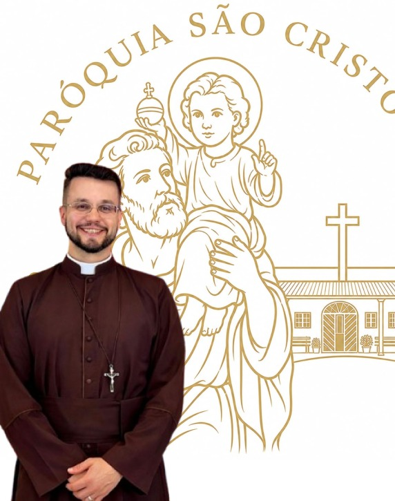
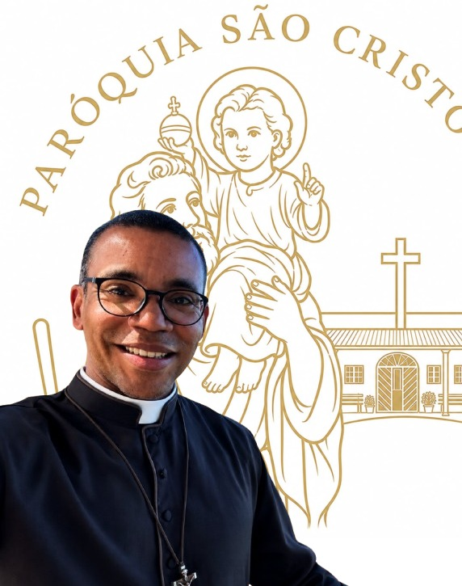

Bem-vindos à
Paróquia São Cristóvão
Uma comunidade de fé, acolhimento e evangelização, celebrando 30 anos de história, missão e serviço ao próximo.


Bem-vindos à
Uma comunidade de fé, acolhimento e evangelização, celebrando 30 anos de história, missão e serviço ao próximo.
A Paróquia São Cristóvão é um espaço de fé, oração e fraternidade, aberto a todos que buscam acolhimento espiritual.
Inspirada por São Cristóvão, padroeiro dos viajantes, nossa comunidade deseja acompanhar cada fiel em sua caminhada de vida e fé.


Formação cristã para crianças, jovens e adultos.
Momento de oração, união e fortalecimento da fé.
Ações solidárias em favor de famílias necessitadas.
Formação cristã para crianças, jovens e adultos.
Momento de oração, união e fortalecimento da fé.
Ações solidárias em favor de famílias necessitadas.
Formação cristã para crianças, jovens e adultos.
Momento de oração, união e fortalecimento da fé.
Responsável por todos os meios de comunicação da paróquia.
📍 Endereço: Rua Carlos Jorge Schmidt, 402, Recanto Campo Belo
📞 Telefone: (11) 11 5979-8559
💬 WhatsApp: (11) 11 5979-8559
📧 E-mail: secretaria@paroquiasaocristovao.com.br
🕐 Secretaria: Segunda a Sexta, das 9h às 17h